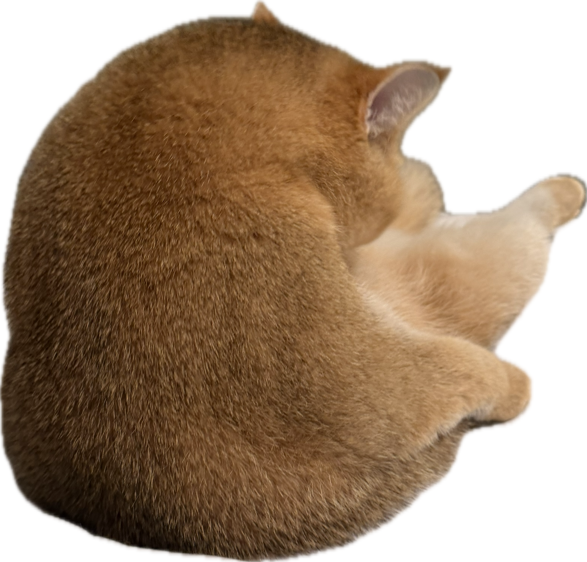
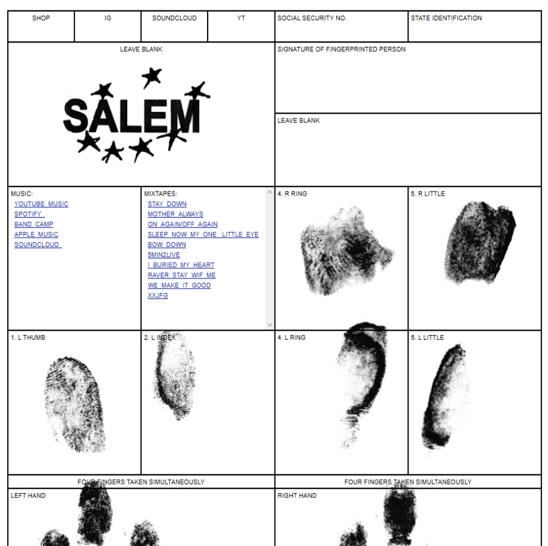

Keith Patterson
Frontend Developer
I am a skilled frontend developer with 2 years of experience crafting responsive, accessible web applications and pixel-perfect animations.
Frontend Developer
I am a skilled frontend developer with 2 years of experience crafting responsive, accessible web applications and pixel-perfect animations.
Scrum Master
I really enjoy programming due to its sandbox nature. I particularly enjoy algorithms and doing complicated things because it requires a puzzle like solution. I've been programming for over a decade.

Developer
Developer with a special interest in Website creation and Personal brand development. Experienced with radio website creation and web portfolio presentations. My go-to IDE is VSCode!

As computer scientists, we bridge the gap between clean, resilient architecture and intuitive human-centered design. Driven by curiosity and rigorous problem-solving, our goal is to turn complex technical challenges into accessible, scalable software that empowers everyday users.